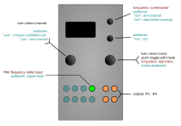

References

References is a tuning-utility app. It comes with a frequency/BPM meter (via the TR4 input, or TR1 if the module is being used in upside-down mode) and a closed-loop calibration mode, as well as outputs fixed reference voltages. These are handy when calibrating other modules, such as VCOs.
- Most of these functions should be fairly self-explanatory.
- To use the frequency/BPM meter, simply patch a signal into TR4 (see note below) and long-press the up-button to invoke the screensaver, where the measurement results will be displayed:
- the frequency of the audio or clock signal input into TR4 is displayed in Hertz, to three decimal places (and it really is accurate to at least three decimal places!).
- the
Note/BMPmenu setting determines whether notes tuning or BPM is displayed below the frequency reading
- To use the closed-loop calibration:
- 1) patch the output channel (A-D) that you want to calibrate into the V/oct input of your VCO.
- 2) patch output of the VCO (ideally, a square wave) into TR4.
- 3) then right-click on
autotune -->, and turn right encoder to selectrun -->. - 4) press the up-button to “arm” the tuner. you should see a number displaying the frequency (at 0V); this shouldn’t jump around erratically (in which case the procedure is bound to fail); tune the initial frequency to somewhere in the 50Hz-200Hz range.
- 5) then push the down-button to set off the procedure, which will take a couple of seconds. If everything goes well, it’ll save the calibration data into the slot
use --> .auto, which can be selected/de-selected via the menu itemuse -->.
- To use the frequency/BPM meter, simply patch a signal into TR4 (see note below) and long-press the up-button to invoke the screensaver, where the measurement results will be displayed:
Note: the frequency meter/BPM and closed-loop calibration input is TR1 if the module is being used in upside-down mode.
Controls
| Control | Function |
|---|---|
| Left encoder (turn) | Select channel A to D to edit (all channels always active) |
| Right encoder (turn) | Navigation mode: move up and down through the menu items. Edit mode: increase or decrease the value being edited. |
| Right encoder (press) | Toggle between menu navigation (selection) mode and value editing mode |
| Right encoder (long press) | App selection menu |
| Up button (long press) | invokes the screensaver display immediately |
| Down button |
Available settings (per-channel)
| Setting | Meaning |
|---|---|
Octave |
sets the octave range. Note that the octave numbering is such that C for octave 0 is 0V, C for octave 1 is 1V and so on. |
Semitone |
sets the semitone offset within each octave range. One semitone increment is 83.33mV. |
Mod range oct |
sets the number of octaves to automatically jump up or down. This can be useful when adjusting trimpots on VCOs. |
Mod rate (s) |
sets the rate (as a period in seconds) at which the reference voltage jumps up or down by the number of octaves set by Mod range oct. |
autotune --> |
opens the autotuner-submenu |
Notes/BPM |
toggle displayed values (for frequency meter) - frequency in Hertz or beats per minute (bpm) |
A above mid C |
Sets the frequency in Hertz (Hz) of the A above middle C used for the tuner calculations (range is 400 Hz to 480 Hz). It defaults to 440 Hz, which is now standard Western concert pitch, but it can be set to other values. |
> mantissa |
sets the fractional part of the A above mid C value, in tenths of a Hertz (0.1 Hz) increments. |
> ppqn |
sets the number of pulses per quarter note (ppqn) used for the bpm display (available settings are 1, 2, 4, 8, 16, 24, 48, 64 and 96 ppqn) |
Closed-Loop Calibration
| Control | Function |
|---|---|
| Right encoder (turn) | Navigation mode: move up and down through the menu items. |
| Left encoder (turn) | item: use -->: choose calibration-set for selected channel (when options are available): default calibration autotuned |
| Up button | item: run-->: arm autotuner (TR4, or TR1 if upside-down), or stop procedure if already running |
| Down button | item: run-->: run autotuner |
| Right encoder (press) | close |
| Right encoder (long press) | App selection menu |
Inputs and outputs
TR4: frequency-meter input, inputs TR1-TR3 are unused. Reference voltages for channels A to D appear on outputs A to D respectively.
Note: the reference voltages output by the References app are only as accurate as the calibration of the module. However, the module is capable of a precision of better than +/- 0.5mV, if calibrated with a precision multimeter. Furthermore, the autotune --> setting for each channel must be set to default, not auto in order for the output voltages output to reflect the indicated voltage. If set to auto, then correction factors for specific VCOs will be applied, and the output voltage will not match the indicated voltage.
Note: the indicated output voltages are only valid if 1V/oct output scaling (the default) is selected for each channel. If a dotted line appears under the menu, then an alternative output scaling is active. You may need to set this back to 1V/oct before using the References app. As at v1.3, you can only access the alternative output scaling settings via the scale editor in the CopierMaschine, Quantermain, meta-Q, Sequins or Acid Curds apps. We apologise for this slight inconvenience.
Screensaver display
The screen is divided into four channel lanes (columns), with the same layout as the Quantermain screensaver, except that the output voltage (rounded to the nearest millivolt) is shown as the top of each lane (column). Note that the minus signs for negative voltages are quite small due to the limited display space, and can be quite hard to see.
Below the channel lanes, the TR4 (or TR1 if run upside-down) frequency measurement is displayed. This will blank itself out ofter about a minute if no signal is being received on TR4 (or TR1 if flipped). Below that is the note/tuner display, or the BPM (beats per minute) display, depending on the Notes/BPM setting. Note that the note tuner only operates down to about 16 Hz.